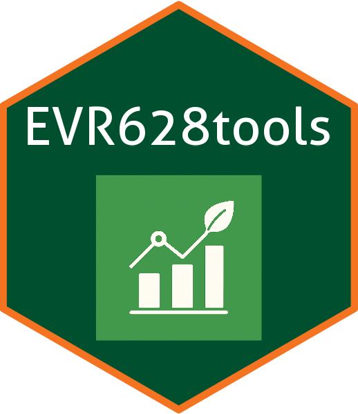

EVR628tools 
EVR628tools contains a series of datasets, palettes, and functions to help in the instruction of EVR 528 / 628 Introduction to Data Management and Visualization for Environmental Scientists.
Installation
You can install the development version of EVR628tools like so:
# install.packages("pak") #In case you don't have pak installed
pak::pak("jcvdav/EVR628tools")Example
The package contains functions with the preface data_* and palette_*. The following example uses one of each. Take a look at the Reference to see a full list of datasets and functions available. The task at hand is simple. We’ll use the EVR628tools::data_lionfish data to make a plot showing how fish size (length and weight) varies by depth using a scatterplot. We’ll use the EVR628tools::palette_UM() color palette to color our points by site. I recommend that you look at the documentation of the data ?EVR628tools::data_lionfish and the color palette EVR628tools::palette_UM() before running the code.
library(ggplot2)
# First, inspect the data
head(EVR628tools::data_lionfish)
#> # A tibble: 6 × 9
#> id site lat lon total_length_mm total_weight_gr size_class depth_m
#> <chr> <chr> <dbl> <dbl> <dbl> <dbl> <chr> <dbl>
#> 1 001-Po-1… Para… 20.5 -87.2 213 113. large 38.1
#> 2 002-Po-2… Para… 20.5 -87.2 124 27.6 medium 27.9
#> 3 003-Pd-2… Pared 20.5 -87.2 166 52.3 medium 18.5
#> 4 004-Cs-1… Cano… 20.5 -87.2 203 123. large 15.5
#> 5 005-Cs-1… Cano… 20.5 -87.2 212 129 large 15
#> 6 006-Pl-2… Paam… 20.5 -87.2 210 139. large 22.7
#> # ℹ 1 more variable: temperature_C <dbl>
# Now let's build a plot
ggplot(data = EVR628tools::data_lionfish,
mapping = aes(x = depth_m,
y = total_length_mm,
size = total_weight_gr,
fill = site)) +
geom_point(shape = 21, color = 1) +
scale_fill_manual(values = EVR628tools::palette_UM(n = 10)) +
theme_bw() +
labs(x = "Depth (m)",
y = "Total Length (mm)",
size = "Total Weight (gr)",
fill = "Site")
Sample figure using data and color palettes from the EVR628tools package. The x-axis shows depth of collection (m) and the y-axis shows fish total length (cm). Marker size idnicates the wet weight of the fish, and marker color the site from which it was sampled.